No módulo anterior você viu a mesma vendedora de açaí do Ver-o-Peso atravessar as sete famílias estéticas. Agora vem a pergunta que separa quem gera imagens bonitas de quem dirige: qual delas usar, e por quê? Um lançamento de produto, uma campanha de ONG e o cartaz de uma festa de tecnobrega podem partir da mesma cena — e precisam de estéticas diferentes, porque querem provocar sentimentos diferentes em pessoas diferentes.
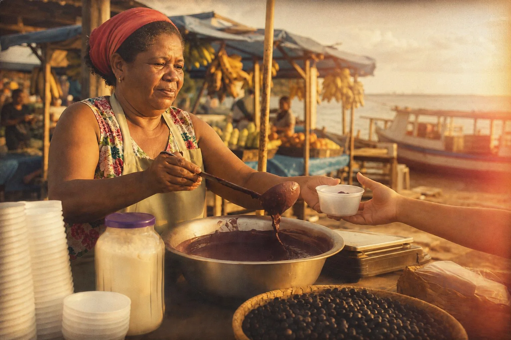
Instrução de edição usada (sobre a imagem-base)
Fully re-render this ENTIRE image — subject AND background — as a HYBRID of two aesthetics. From CINEMATIC take the structure: a single low warm directional sun from the right, deep contrast, shallow depth of field, a sense of weight and story. From RETRO/VINTAGE take the surface: the look of a 1970s color negative film print — warm faded tones, lifted milky blacks, slightly yellowed whites, clearly visible film grain, gentle analog color shifts, soft vignette and a hint of light leak at the right edge. The result must look unmistakably like an old film photograph with cinematic lighting. Keep the same woman, face, headscarf, outfit, pose, action, stall and framing. No text on signs.
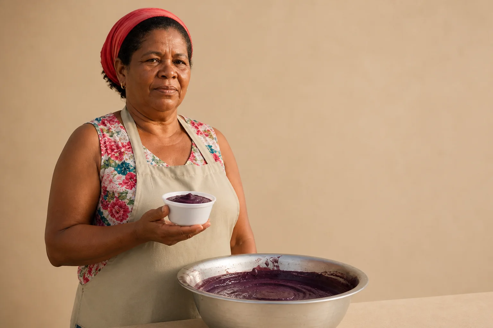
Instrução de edição usada (sobre a imagem-base)
Fully re-render this ENTIRE image — subject AND background — as a HYBRID of MINIMALIST and EDITORIAL/FASHION aesthetics for a premium açaí brand launch. Minimalist: replace the busy market background with a clean, seamless wall in muted sand beige, remove the customer's hand and the clutter on the stall so only the aluminium basin and one white bowl of açaí remain, lots of negative space on the right. Editorial: large soft diffused studio light from the front-left, polished skin and fabric texture, the woman now standing tall and looking confidently straight into the camera, holding the bowl of açaí at chest height like a campaign portrait. Palette: sand, off-white and her red headscarf, with the deep purple of the açaí as the strongest accent. Keep the same woman, face, headscarf and outfit.
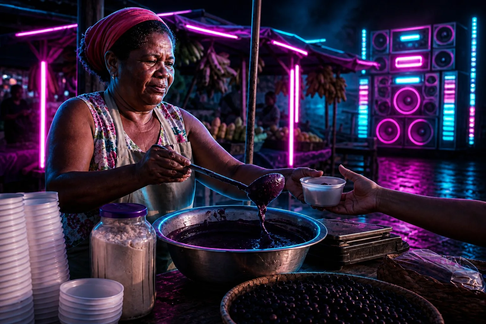
Instrução de edição usada (sobre a imagem-base)
Fully re-render this ENTIRE image — subject AND background — as a HYBRID of FUTURISTIC/TECH and GRITTY/DARK aesthetics for a poster of a tecnobrega night party. Turn the scene into NIGHT: the market is dark, lit by magenta and cyan neon tubes and LED strips from a huge sound-system rig in the background, a hard cyan rim light outlining the woman's profile and the aluminium basin, the açaí glowing deep violet. Gritty: very high contrast, crushed black shadows, wet reflective ground, rough weathered wood and scratched metal textures, a little smoke in the air. Keep the same woman, face, headscarf, outfit, pose, action, stall and framing. No text on signs.
Três objetivos, uma cena-base. Todas são edições da mesma foto da vendedora, cada uma pedindo uma mistura de duas famílias escolhida pelo objetivo. Nenhuma é “a mais bonita”: cada uma está certa para um público e errada para os outros dois. Este módulo ensina a chegar a essa escolha de propósito.
1A cadeia de decisão: objetivo → emoção → estética
O que é
Escolher estética não é abrir o Pinterest e salvar o que agrada. É responder, em ordem, a cinco perguntas. Cada resposta estreita a seguinte, e a última já sai em forma de palavras que você cola no prompt.
Por que aprender
O público decide em segundos se confia, se deseja, se continua olhando. Essa decisão não é racional: é uma associação disparada por cor, luz, textura e composição. Se você escolhe a estética pelo gosto pessoal, pode acertar — mas não consegue explicar ao cliente, nem repetir na semana seguinte. Quando a escolha nasce do objetivo, você tem um argumento (“queremos confiança, por isso luz suave e muito espaço”) e um critério para julgar cada imagem gerada.
Conceitos-chave em ação
Casos: do objetivo à estética
| Projeto | Objetivo | Emoção-alvo | Estética (família ou híbrido) | Paleta e luz |
|---|---|---|---|---|
| Lançamento de um fone sem fio | gerar desejo e parecer inovador | curiosidade, “quero ter” | Futurista + Minimalista | grafite e prata, um acento ciano; luz de recorte, reflexos em superfície lisa |
| Marca pessoal de uma nutricionista | passar confiança e proximidade | calma, “ela entende de mim” | Minimalista com toque Sonhador | creme, verde-sálvia; luz de janela difusa, fundo limpo |
| ONG de mulheres ribeirinhas | mobilizar doações | respeito, importância, memória | Cinematográfico + Retrô | terrosos quentes; sol baixo direcional, grão de filme |
| Restaurante de cozinha paraense | encher o salão no fim de semana | apetite, acolhimento | Cinematográfico quente (documental) | terracota, verde, amarelo do tucupi; luz lateral dourada |
| Academia de luta | atrair alunos que querem superação | força, intensidade | Sombrio | preto, concreto, um vermelho; luz dura de cima, contraste alto |
| Loja de moda autoral | posicionar como tendência | confiança, status | Editorial | cores coordenadas com a coleção; luz de estúdio, pose marcada |
| Pousada histórica em Paraty | vender a experiência de tempo lento | nostalgia, calma | Retrô + Sonhador | tons desbotados, luz de fim de tarde com névoa, grão |
| Aplicativo de finanças | parecer seguro e simples | segurança, controle | Minimalista | branco, azul profundo; luz suave, formas geométricas, muito respiro |
2Meta-mensagens: cada elemento diz alguma coisa
O que é
Uma meta-mensagem é o que a imagem diz sem dizer. Muito espaço vazio em volta de um produto não é “falta de coisa”: diz “somos seguros o bastante para não gritar”. Grão de filme não é defeito: diz “isto é real, foi vivido”. Para usar isso de propósito, descreva cada elemento numa cadeia de quatro elos.
A cadeia de um elemento
- Elemento — o que está na imagem (ex.: muito espaço negativo).
- Função — o trabalho prático que ele faz (ex.: isola o produto, dá foco).
- Meta-mensagem — o que isso sugere sobre quem fala (ex.: confiança premium, contenção).
- Emoção — o que o público sente (ex.: calma, confiança).
Por que aprender
Estética coerente é quando todos os elementos puxam para a mesma emoção. Estética amadora é quando cada um puxa para um lado: fundo minimalista, luz de balada, fonte infantil e textura de papel velho. O público não sabe dizer o que está errado, mas sente que “parece barato”. Mudar um único elemento já muda a leitura — veja a mesma cena com só a paleta trocada.
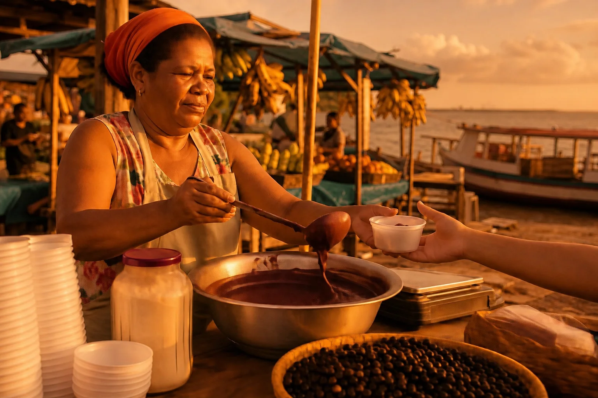
Instrução de edição usada (sobre a imagem-base)
Change ONLY the color palette and color grade of this entire image: push everything into a WARM palette — golden-amber highlights, terracotta, ochre and burnt-orange midtones, warm brown shadows, skin glowing like a 3000K sunset, the blue awnings shifted toward teal-brown. The change must be obvious. Keep the same woman, face, pose, action, stall, objects, framing and light direction identical. No text on signs.

Prompt usado
Medium-wide shot of an açaí vendor at an open-air riverside market in Belém, Brazil, late afternoon. She is a Black Brazilian woman in her late 40s with short natural hair under a faded red headscarf, wearing a sleeveless floral blouse and a plain canvas apron, ladling thick dark-purple açaí from a large aluminium basin into a white plastic bowl for a customer whose hand reaches in from the right edge. On her wooden stall: stacked bowls, a jar of tapioca flour, a scale, straw baskets of açaí berries. Behind her, blurred market stalls with blue tarpaulin awnings, hanging bunches of bananas, and a glimpse of the river with a wooden boat. Shot at eye level on a 35mm lens at f/4, vendor on the left third. Warm low sun from the right, around 4000K, soft side shadows. Neutral, straightforward documentary photograph, natural colors, no stylization. No text anywhere in the scene: no signs, no chalkboards, no printed words on clothing, no brand names or logos on scales or products.
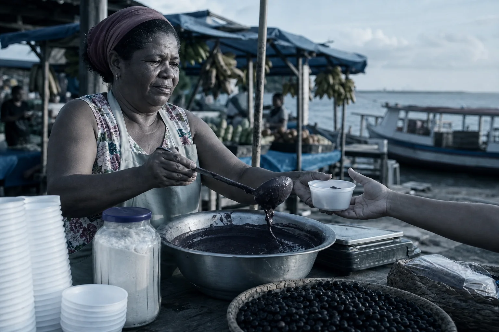
Instrução de edição usada (sobre a imagem-base)
Change ONLY the color palette and color grade of this entire image: push everything into a COLD palette — steel-blue and cold teal midtones, desaturated skin, blue-gray shadows, pale cyan highlights, the red headscarf muted toward maroon, like an overcast 7000K morning. The change must be obvious. Keep the same woman, face, pose, action, stall, objects, framing and light direction identical. No text on signs.
As duas laterais são edições da base pedindo para mudar só a paleta; pessoa, pose, banca e enquadramento continuam iguais. A versão quente puxa para acolhimento, fim de tarde, comida afetiva; a fria puxa para distância, manhã nublada, um tom quase jornalístico. Mesmo assunto, outra emoção.
Conceitos-chave em ação
Mapa de significados (uso prático)
| Elemento | Função | Meta-mensagem | Emoção |
|---|---|---|---|
| Muito espaço negativo | foco, respiro | confiança premium | calma |
| Um único herói no quadro | leitura imediata | liderança, clareza | decisão |
| Simetria | ordem | confiabilidade | segurança |
| Assimetria marcada | movimento | ousadia | curiosidade |
| Grão fino de filme | tato, imperfeição | autenticidade | confiança humana |
| Cromado, vidro, brilho | destaque moderno | inovação | curiosidade, desejo |
| Sombras pesadas | drama | intensidade | tensão |
| Luz natural suave | calor, clareza | honestidade | conforto |
| Macro de detalhe (mãos, fibra) | atenção ao feito à mão | cuidado artesanal | respeito |
| Fundo cheio de contexto | situa a cena | vida real | familiaridade (risco: bagunça) |
| Formas arredondadas | suavizar | acessibilidade | acolhimento |
| Ângulos agudos, diagonais | direção, ênfase | precisão, velocidade | energia |
Use a tabela ao contrário também: se a emoção-alvo é calma, procure na última coluna e volte para a primeira — espaço negativo, luz natural suave, formas arredondadas. Esses são os elementos que o seu prompt precisa pedir.
3Cor com papel definido, não arco-íris
O que é
O significado de uma cor depende do contexto — vermelho num hospital e numa pizzaria dizem coisas diferentes. O que funciona em qualquer contexto é dar papéis às cores: uma base neutra que ocupa a maior parte da imagem, um acento principal que é a assinatura (e aparece onde você quer o olho) e, raramente, um acento de apoio.
Famílias de cor: o que costumam sugerir e o cuidado
| Cor | Tende a sugerir | Funciona melhor como | Cuidado |
|---|---|---|---|
| Azul | confiança, estabilidade, competência | base ou acento em marcas de serviço, tech, finanças | frio demais sem um toque humano |
| Vermelho | urgência, energia, ação | acento pequeno (um lenço, um botão) | em área grande vira agressivo |
| Verde | crescimento, saúde, equilíbrio | acento ou base natural | em excesso parece “bem-estar genérico” |
| Amarelo / laranja | otimismo, calor, atenção | acento | grandes áreas reduzem a sensação premium |
| Roxo | criatividade, mistério, aspiração | acento com neutros | saturado demais parece festa infantil |
| Preto / branco | autoridade, clareza, contenção | base premium | precisa de contraste e espaço para não ficar frio |
| Marrom / bege | artesanal, herança, terra | base para comida, café, artesanato | pode envelhecer a marca sem uma tipografia moderna |
| Ciano / turquesa | inovação calma, frescor | acento em marcas de “laboratório” ou ateliê | neon demais vira balada |
Por que aprender
Repare na cena-base: o roxo do açaí é a cor mais forte, e o vermelho do lenço puxa o olho para o rosto. Se o céu, os toldos e as frutas tivessem a mesma força, nada se destacaria. Uma proporção que ajuda a pensar: cerca de 70% base, 25% cor secundária, 5% acento. Não é lei; é um ponto de partida para você não pedir “colorful” e receber um arco-íris.
Conceitos-chave em ação
✓ Paleta com papéis (escreva assim)
- neutral base of sand and off-white, deep açaí purple as the only strong accent
- earthy palette of terracotta and deep green, the yellow of the tucupi as the single bright accent
- graphite and silver base, one cyan accent on the product
✗ Paleta sem papel
- colorful, vibrant, beautiful colors
- purple, red, yellow, blue, green
- brand colors
4Híbridos: duas famílias, cada uma com uma função
O que é
As sete famílias são pontos de partida, não gavetas. Um híbrido mistura duas, mas não de qualquer jeito: meio a meio vira uma papa sem identidade. O método que funciona é dar uma função a cada família.
Por que aprender
Quando as duas famílias disputam a mesma camada (duas luzes, duas paletas), o modelo faz uma média e o resultado não comunica nenhuma das duas. Separando as funções, cada emoção tem onde aparecer: a luz cinematográfica dá peso, o grão retrô dá memória.
Conceitos-chave em ação
Instrução de edição usada (sobre a imagem-base)
Fully re-render this ENTIRE image — subject AND background — as a HYBRID of two aesthetics. From CINEMATIC take the structure: a single low warm directional sun from the right, deep contrast, shallow depth of field, a sense of weight and story. From RETRO/VINTAGE take the surface: the look of a 1970s color negative film print — warm faded tones, lifted milky blacks, slightly yellowed whites, clearly visible film grain, gentle analog color shifts, soft vignette and a hint of light leak at the right edge. The result must look unmistakably like an old film photograph with cinematic lighting. Keep the same woman, face, headscarf, outfit, pose, action, stall and framing. No text on signs.
Instrução de edição usada (sobre a imagem-base)
Fully re-render this ENTIRE image — subject AND background — as a HYBRID of MINIMALIST and EDITORIAL/FASHION aesthetics for a premium açaí brand launch. Minimalist: replace the busy market background with a clean, seamless wall in muted sand beige, remove the customer's hand and the clutter on the stall so only the aluminium basin and one white bowl of açaí remain, lots of negative space on the right. Editorial: large soft diffused studio light from the front-left, polished skin and fabric texture, the woman now standing tall and looking confidently straight into the camera, holding the bowl of açaí at chest height like a campaign portrait. Palette: sand, off-white and her red headscarf, with the deep purple of the açaí as the strongest accent. Keep the same woman, face, headscarf and outfit.
Instrução de edição usada (sobre a imagem-base)
Fully re-render this ENTIRE image — subject AND background — as a HYBRID of FUTURISTIC/TECH and GRITTY/DARK aesthetics for a poster of a tecnobrega night party. Turn the scene into NIGHT: the market is dark, lit by magenta and cyan neon tubes and LED strips from a huge sound-system rig in the background, a hard cyan rim light outlining the woman's profile and the aluminium basin, the açaí glowing deep violet. Gritty: very high contrast, crushed black shadows, wet reflective ground, rough weathered wood and scratched metal textures, a little smoke in the air. Keep the same woman, face, headscarf, outfit, pose, action, stall and framing. No text on signs.
Três edições da cena-base. À esquerda, o cinema dá a estrutura (sol baixo e duro, contraste, fundo desfocado) e o retrô dá a superfície (cor de negativo antigo, pretos lavados, grão). No meio, o minimalismo limpa o fundo e o editorial muda a atitude: a vendedora encara a câmera com a tigela na mão — aqui a pose mudou de propósito, porque a pose faz parte do editorial. À direita, o futurista traz o néon e o recorte; o sombrio traz a noite, o contraste e o chão molhado. Abra “Prompt usado” e veja como cada família recebeu uma tarefa.
Híbridos que funcionam (e por quê)
| Estrutura vem de | Superfície vem de | Resultado | Bom para |
|---|---|---|---|
| Cinematográfico | Retrô | peso de cinema com cara de memória | documentário, causas, marcas de herança |
| Minimalista | Editorial | limpo, mas com atitude | lançamento premium, marca pessoal |
| Sombrio | Futurista | energia de rua com brilho tecnológico | música eletrônica, esporte, games |
| Sonhador | Retrô | nostalgia suave | turismo, casamento, memória afetiva |
| Minimalista | Futurista | precisão calma | tecnologia, apps, eletrônicos |
5Como a estética entra no prompt
O que é
Aplicar uma estética tem quatro passos: nomear a família (ou o híbrido), acrescentar palavras de paleta, luz, textura e clima, manter o mesmo vocabulário em todas as variações e gerar várias opções para escolher a direção mais forte. O segundo passo é o que quase todo mundo pula.
Por que aprender
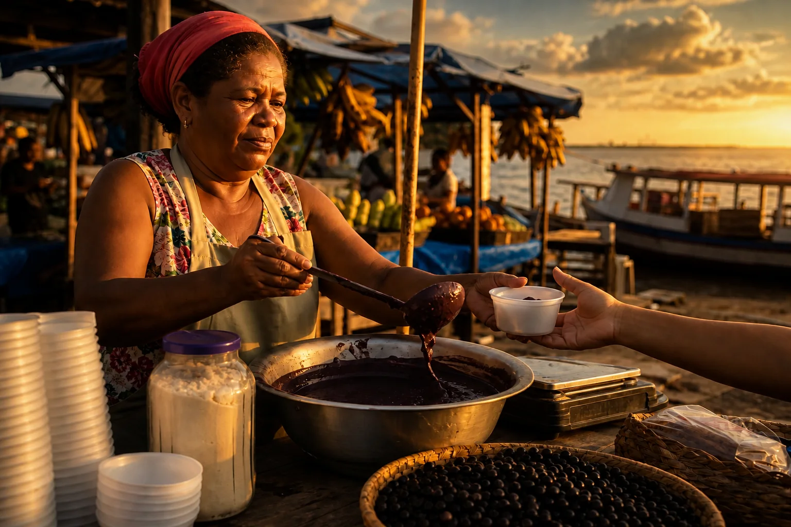
Instrução de edição usada (sobre a imagem-base)
Make it cinematic.
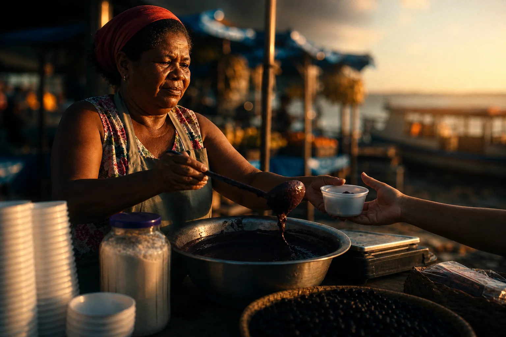
Instrução de edição usada (sobre a imagem-base)
Fully re-render this ENTIRE image — subject AND background — in a CINEMATIC aesthetic. Light: a low, hard, warm sun raking in from the right as the single key light, the left side of the frame falling into deep shadow, strong contrast between lit and unlit areas. Palette and grade: teal-and-orange film grade, rich crushed blacks, warm skin against cool shadows. Lens and texture: widescreen anamorphic feel, very shallow depth of field so the market behind her melts into soft bokeh, subtle 35mm film grain and soft halation around the highlights. Mood: quiet, weighty, like a single frame from a drama about her life. Keep the same woman, face, headscarf, outfit, pose, action, stall and framing. No text on signs.
As duas são edições da mesma cena-base. À esquerda, a instrução tem três palavras: o modelo decide sozinho o que “cinematográfico” significa — esquentou tudo, pôs um céu de pôr do sol dramático e aumentou o contraste. Ficou bonito, mas é o clichê médio: as decisões foram do modelo, não suas, e a cena continua nítida e cheia de informação. À direita, a família foi traduzida em decisões: sol baixo e duro da direita, sombra profunda à esquerda, grade teal-laranja, fundo em bokeh, grão e halo nas luzes. Compare os dois “Prompt usado”.
Conceitos-chave em ação
Vocabulário de prompt por família
| Família | Luz | Paleta | Textura / acabamento | Clima (mood) |
|---|---|---|---|---|
| Cinematográfico | low hard key light, deep shadows, motivated light | teal-and-orange grade, rich blacks | anamorphic, shallow depth of field, film grain, halation | dramatic, weighty, story |
| Minimalista | large soft diffused light, no harsh shadows | neutral base, one accent color | clean surfaces, seamless background, lots of negative space | calm, clear, premium |
| Editorial de moda | studio key light with fill, beauty dish | color-coordinated styling | polished skin, crisp fabric, campaign finish | confident, bold, aspirational |
| Sonhador | gentle backlight, glow, haze | pastel or muted tones | soft focus, bloom, light leaks | tender, nostalgic, calm |
| Retrô | natural daylight, soft contrast | warm faded tones, lifted blacks | 1970s film grain, analog imperfections, vignette | honest, human, remembered |
| Sombrio | hard top or side light, high contrast | desaturated, near-black shadows | rough concrete, sweat, wet surfaces | intense, powerful, rebellious |
| Futurista / tech | neon and rim light, reflections | cyan, magenta, graphite | chrome, glass, glossy surfaces, clean geometry | innovative, fast, precise |
Ordem no prompt
- Assunto e ação — quem, fazendo o quê, onde (a cena não muda com a estética).
- Câmera — plano, lente, ângulo.
- Nome da estética — “in a cinematic aesthetic” ou “a hybrid of cinematic structure and retro surface”.
- Luz — as palavras da coluna Luz.
- Paleta — com papéis: base + acento.
- Textura e acabamento — grão, brilho, foco.
- Clima — uma ou duas palavras no fim (“evoking quiet pride”).
6Consistência de série: o bloco de estilo travado
O que é
Uma marca raramente precisa de uma imagem; precisa de dezenas, ao longo de meses. A ferramenta para isso é o bloco de estilo: 3 a 5 linhas que descrevem luz, paleta, lente, textura e clima, escritas uma vez e coladas sem mudar uma vírgula em todo prompt. O assunto muda; o bloco não.
Bloco de estilo do restaurante fictício (usado nas três imagens abaixo)
STYLE BLOCK: warm cinematic documentary look; low golden-hour side light from a window on the left, deep but soft shadows on the right; earthy palette of terracotta, deep green and açaí purple, with the yellow of the tucupi as the only bright accent; 50mm lens at f/2, eye level, shallow depth of field; subtle 35mm film grain; calm, proud mood.
Por que aprender
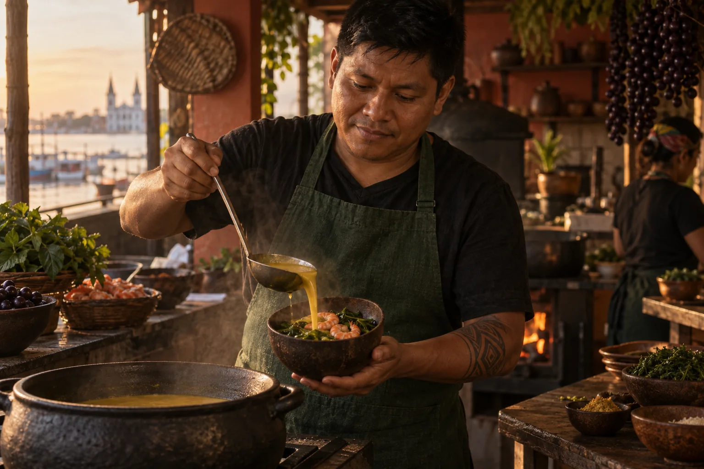
Prompt usado
Medium shot of a Brazilian chef in his mid-30s with Indigenous features, short black hair and a dark-green linen apron, carefully ladling yellow tucupi broth into a dark gourd bowl (cuia) filled with jambu leaves and pink shrimp, in the small open kitchen of a family restaurant in Belém. STYLE BLOCK: warm cinematic documentary look; low golden-hour side light from a window on the left, deep but soft shadows on the right; earthy palette of terracotta, deep green and açaí purple, with the yellow of the tucupi as the only bright accent; 50mm lens at f/2, eye level, shallow depth of field; subtle 35mm film grain; calm, proud mood. No text on signs.
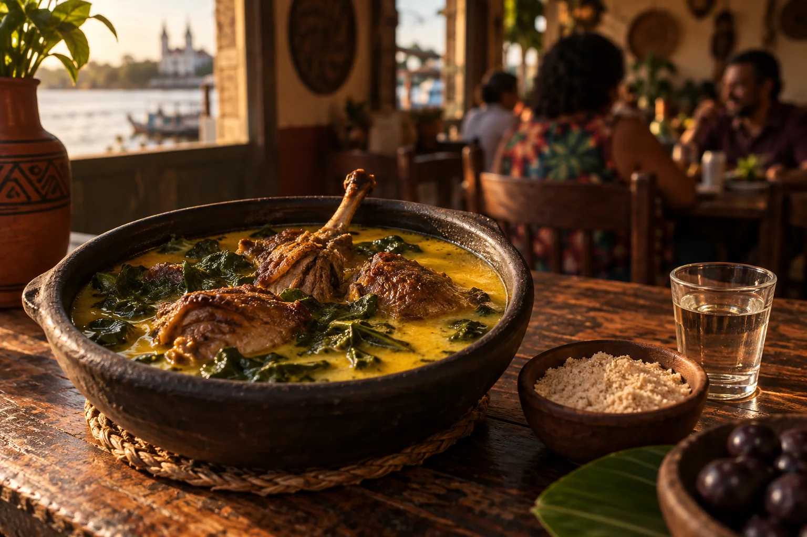
Prompt usado
Three-quarter close-up of a plate of pato no tucupi — pieces of roasted duck in yellow tucupi broth with dark-green jambu leaves — served in a dark clay dish on a worn wooden table, a small bowl of manioc flour and a glass of cachaça beside it, in a family restaurant in Belém. STYLE BLOCK: warm cinematic documentary look; low golden-hour side light from a window on the left, deep but soft shadows on the right; earthy palette of terracotta, deep green and açaí purple, with the yellow of the tucupi as the only bright accent; 50mm lens at f/2, eye level, shallow depth of field; subtle 35mm film grain; calm, proud mood. No text on signs.
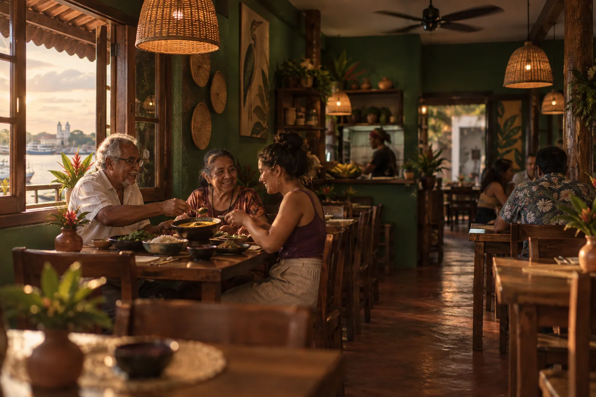
Prompt usado
Wide shot of the dining room of a small family restaurant in Belém: wooden tables, woven straw pendant lamps, green-painted walls, an older couple and a young woman sharing dishes at a table by the open window, a ceiling fan turning. STYLE BLOCK: warm cinematic documentary look; low golden-hour side light from a window on the left, deep but soft shadows on the right; earthy palette of terracotta, deep green and açaí purple, with the yellow of the tucupi as the only bright accent; 50mm lens at f/2, eye level, shallow depth of field; subtle 35mm film grain; calm, proud mood. No text on signs.
Três gerações independentes para um restaurante paraense fictício — assuntos diferentes (o chef, o pato no tucupi, o salão), o mesmo bloco de estilo no fim de cada prompt. A luz lateral dourada, os terrosos e o grão amarram as três: parecem da mesma campanha.
Conceitos-chave em ação
Prompt usado
Three-quarter close-up of a plate of pato no tucupi — pieces of roasted duck in yellow tucupi broth with dark-green jambu leaves — served in a dark clay dish on a worn wooden table, a small bowl of manioc flour and a glass of cachaça beside it, in a family restaurant in Belém. STYLE BLOCK: warm cinematic documentary look; low golden-hour side light from a window on the left, deep but soft shadows on the right; earthy palette of terracotta, deep green and açaí purple, with the yellow of the tucupi as the only bright accent; 50mm lens at f/2, eye level, shallow depth of field; subtle 35mm film grain; calm, proud mood. No text on signs.
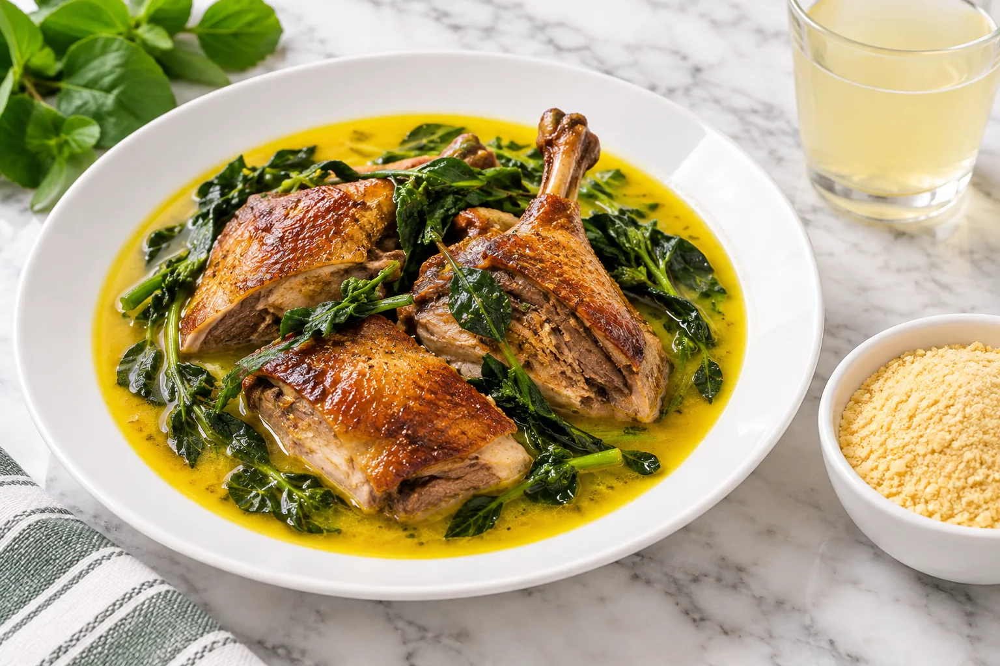
Prompt usado
Three-quarter close-up of a plate of pato no tucupi — pieces of roasted duck in yellow tucupi broth with dark-green jambu leaves — served on a white porcelain plate on a white marble counter, a small bowl of manioc flour and a glass beside it. Bright, vibrant, high-key food photography, crisp even white light from above, saturated colors, clean and fresh, sharp from front to back. No text.
Mesmo prato, duas gerações independentes. À direita, o bloco foi trocado por palavras “parecidas” que qualquer um escreveria num dia de pressa: “bright, vibrant, high-key”, luz branca de cima, mármore. A foto não é ruim — mas não pertence à série. No feed, ela quebraria a sequência.
✓ Mantém a série
- Colar o bloco de estilo inteiro, igual, em todo prompt
- Mudar só assunto, ação e enquadramento
- Guardar o bloco num arquivo com data e versão (v1, v2)
- Revisar a série lado a lado antes de publicar
✗ Quebra a série
- Reescrever o estilo “de cabeça” a cada imagem
- Trocar “warm” por “golden” e “grain” por “vintage” achando que é igual
- Mudar a direção da luz de uma imagem para outra
- Aprovar imagem por imagem, sem ver o conjunto
7Checar a escolha antes de produzir
O que é
Antes de gerar a série inteira, gere três opções da direção escolhida e passe cada uma por três testes. Eles levam cinco minutos e evitam refazer trinta imagens.
Por que aprender
- Teste do público: mostre a imagem a alguém do público por 3 segundos e pergunte “o que você sentiu?”. Se a resposta não se parece com a sua emoção-alvo, a estética está errada, mesmo que esteja bonita.
- Teste da contradição: passe elemento por elemento (luz, paleta, textura, composição, pose) e pergunte se todos puxam para a mesma emoção. Um elemento que puxa para outro lado é o que faz a imagem “parecer barata”.
- Teste da repetição: você consegue produzir essa estética toda semana, com os assuntos reais do cliente (produto na mesa, equipe, bastidores)? Um híbrido que só funciona numa cena de pôr do sol não serve para um feed.
Conceitos-chave em ação
Estética não é o que você gosta. É o que o seu público precisa sentir — repetido até virar reconhecimento.
Prática guiada: do briefing ao bloco de estilo
Você vai pegar um projeto (seu, de um cliente ou um dos casos da tabela) e sair com a cadeia de decisão preenchida, um bloco de estilo e três imagens que o comprovam.
Roteiro
- Escreva a cadeia em cinco linhas: objetivo, emoção-alvo, estética (família ou híbrido), paleta com papéis e luz, referências.
- Para cada elemento-chave (luz, paleta, textura, composição), escreva a cadeia Elemento → função → meta → emoção. Se algum elemento não chega à emoção-alvo, troque-o.
- Monte o bloco de estilo com a tabela de vocabulário: 3–5 linhas, em inglês.
- Escolha três assuntos diferentes do projeto (uma pessoa, um produto, um ambiente) e gere uma imagem de cada, colando o bloco igual.
- Coloque as três lado a lado e rode os três testes (público, contradição, repetição).
Molde de prompt com bloco de estilo
Objetivo: Gerar imagens de uma série trocando só a primeira linha.
<Plano> of <assunto: quem ou o quê, aparência> <ação concreta>, in <lugar com 2-3 objetos>. In a <família ou híbrido: e.g. 'hybrid of cinematic structure and retro surface'> aesthetic. STYLE BLOCK: <luz: fonte, direção, qualidade, K>; <paleta: base + acento único>; <lente e profundidade de campo>; <textura e acabamento>; <clima em 2 palavras> mood. No text on signs.
Como verificar: Nas três imagens a luz vem do mesmo lado, a paleta tem o mesmo acento e o grão/acabamento é igual? Se uma destoa, confira se o bloco foi colado sem alteração.
Exemplo pronto: híbrido para uma ONG
Objetivo: Testar um híbrido estrutura + superfície num retrato documental.
Medium shot of a Brazilian riverside fisherwoman in her 50s with sun-weathered skin and a faded yellow T-shirt, mending a fishing net on the wooden deck of her stilt house over the river, in the Amazon delta. In a hybrid aesthetic: CINEMATIC structure with RETRO surface. STYLE BLOCK: low warm late-afternoon sun from the right as a hard key light, deep shadow on the left side of the frame, shallow depth of field on a 50mm lens at f/2; 1970s color negative film look with warm faded tones, lifted blacks, visible grain and a soft vignette; earthy palette of wood brown and river green with the yellow shirt as the only accent; dignified, quiet, remembered mood. No text.
Como verificar: A luz tem direção clara e sombra profunda (estrutura de cinema)? A superfície parece filme antigo (grão, pretos lavados)? O amarelo é o único acento?
Pedir ajuda a um assistente para fechar a cadeia
Objetivo: Usar um assistente de texto (ChatGPT, Claude, Gemini) para propor e justificar três rotas estéticas.
Você é diretor de arte. Projeto: <descreva em 3 frases: o que é, para quem, onde as imagens vão aparecer>. Objetivo principal: <vender / atrair clientes / gerar confiança / mobilizar>. 1) Proponha a emoção-alvo em até 3 palavras. 2) Proponha 3 rotas estéticas (uma família pura e dois híbridos). Para cada híbrido, diga qual família dá a ESTRUTURA (luz, composição) e qual dá a SUPERFÍCIE (paleta, textura). 3) Para cada rota, escreva a cadeia Elemento → função → meta-mensagem → emoção para luz, paleta e textura. 4) Para a rota que você recomendaria, escreva um STYLE BLOCK de 3–5 linhas em inglês, pronto para colar em prompts de imagem. Não use nomes de artistas nem de marcas reais.
Como verificar: As três rotas são realmente diferentes? A recomendada tem justificativa ligada ao objetivo (não só “é bonita”)? O bloco tem luz com direção, paleta com acento único e textura?
Lição de casa
Continue no seu caderno de olhar. Esta lição transforma os boards do módulo anterior numa decisão justificada.
Nível básico (obrigatório)
- Escolha um projeto e escreva a cadeia de decisão completa (cinco linhas).
- Monte a tabela de meta-mensagens do projeto: 5 elementos, cada um com função, meta e emoção.
- Escreva um bloco de estilo e gere 3 imagens de assuntos diferentes com ele, sem alterar o bloco.
- Rode os três testes e anote em 5 frases o que passou e o que falhou.
Nível avançado (desafio)
- Três rotas, um briefing: gere a mesma cena em uma família pura e em dois híbridos (estrutura + superfície). Escreva qual você apresentaria ao cliente e por quê, citando a emoção-alvo.
- Teste de deriva: gere a mesma série duas vezes — uma com o bloco travado, outra reescrevendo o estilo de cabeça em cada prompt. Monte as duas lado a lado e descreva as diferenças.
Entregue/guarde: No caderno: a cadeia de decisão, a tabela de meta-mensagens, o bloco de estilo (com versão e data), as 3 imagens e a análise dos testes.
Teste sua decisão
1. Uma nutricionista quer um feed que passe confiança e proximidade. Qual é o primeiro passo certo?
Consultar a explicação
A cadeia começa no objetivo e passa pela emoção. É a emoção-alvo que diz se você precisa de luz suave e espaço (minimalista) ou de contraste e drama — a beleza sozinha não decide.
2. Você quer um híbrido de cinematográfica e retrô. Qual prompt tem mais chance de funcionar?
Consultar a explicação
Dar uma função a cada família (estrutura para uma, superfície para a outra) evita que o modelo faça uma média. Porcentagens e listas de adjetivos não dizem o que cada estética deve controlar.
3. A terceira imagem de uma série saiu com luz branca chapada e cores saturadas, destoando das outras. O que provavelmente aconteceu?
Consultar a explicação
Séries se mantêm coerentes quando o bloco de estilo entra idêntico em todos os prompts. Trocar palavras por “sinônimos” (bright, vibrant) muda luz e paleta — exatamente o que se vê na imagem à deriva.
Responder não marca a leitura nem bloqueia o próximo módulo.
O que levar desta aula
- Decida em ordem: objetivo → emoção → estética → paleta e luz → referências.
- Todo elemento carrega uma meta-mensagem; estética coerente é quando todos puxam para a mesma emoção.
- Cores com papel: base neutra, um acento principal, apoio raro.
- Híbrido bom = uma família dá a estrutura (luz, composição), a outra dá a superfície (paleta, textura).
- O nome da estética não basta: traduza em vocabulário de luz, paleta, textura e clima.
- Série coerente = bloco de estilo travado, colado igual em todo prompt.